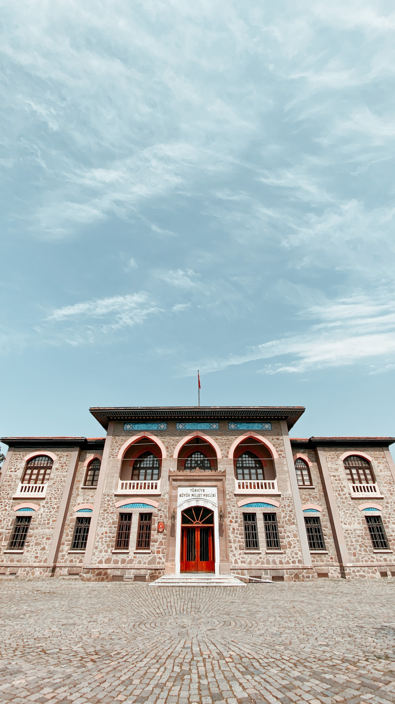

Müzeler
Ankara ilindeki müzelerin büyük çoğunluğu Ankara şehir merkezi sınırları içerisinde kalır. İlde çeşitli kurumlarca işletilen 53 müze bulunmaktadır.
Kurtuluş Savaşı ve Cumhuriyet'in kuruluş yıllarına ait önemli eşyaları Ankara'daki müzelerde bulmak mümkündür. I. Türkiye Büyük Millet Meclisi Binası'nda bulunan Kurtuluş Savaşı Müzesi, Anıtkabir'deki Atatürk ve Kurtuluş Savaşı Müzesi, II. TBMM Binası'ndaki Cumhuriyet Müzesi, Devlet Mezarlığı Müzesi bu tarihî müzelerin başlıcalarıdır. Bunların yanı sıra İsmet İnönü ve Mehmet Akif Ersoy'un evleri de birer müze olmuştur. Ankara'nın başkent olmasından dolayı doğal olarak Türkiye'nin ilk belli başlı müzeleri (Etnografya Müzesi, Devlet Resim ve Heykel Müzesi gibi) Ankara'da oluşturulmuştur. Çeşitli devlet kuruluşları da başkentte bulunmaları nedeniyle müzelerini burada kurmuşlardır, Ziraat Bankası Müzesi, Türk Hava Kurumu Müzesi, Maden Tetkik ve Arama Genel Müdürlüğü'nün Tabiat Tarihi Müzesi gibi. Yakın yıllarda kurulan ODTÜ Bilim ve Teknoloji Müzesi, Feza Gürsey Bilim Merkezi, Çengelhan Rahmi Koç Müzesi, Ulucanlar Cezaevi Müzesi, Altınköy Açık Hava Müzesi, Erimtan Arkeoloji ve Sanat Müzesi gibi yeni müzelerle Ankara'nın müze seçenekleri zenginleşmektedir.
1997'de "Avrupa'da Yılın Müzesi" seçilen Anadolu Medeniyetleri Müzesi, ziyaretçi sayısı bakımından Türkiye'de onuncu, Ankara'da birincidir. Müzede Paleolitik Çağ'dan günümüze Anadolu'nun arkeolojik hazineleri sergilenir.
Ankara şehri dışındaki en önemli müze, Kral Midas'ın tümülüsünün de bulunduğu Polatlı'daki Gordion Müzesi'dir. Bu müzede bölgede keşfedilmiş, Tunç Çağı ve Frigya döneminden kalma arkeolojik eserler sergilenmektedir.
